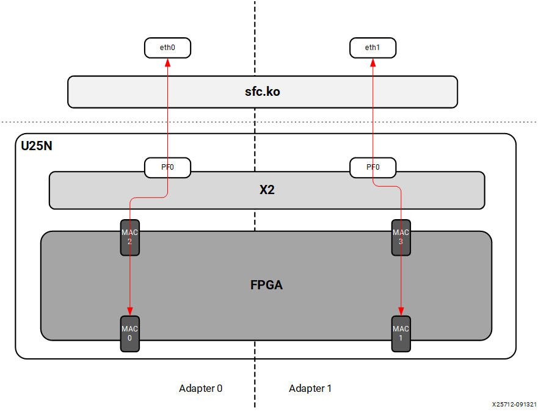
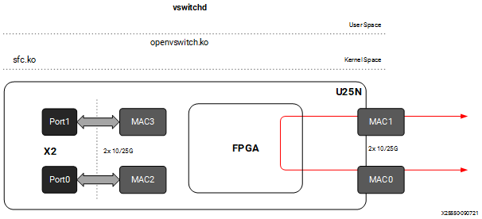
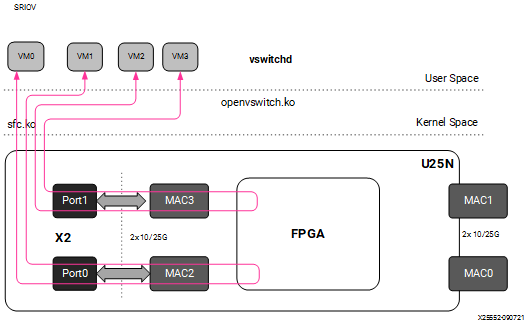
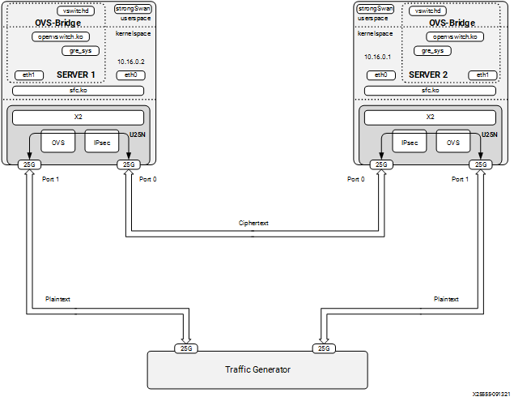
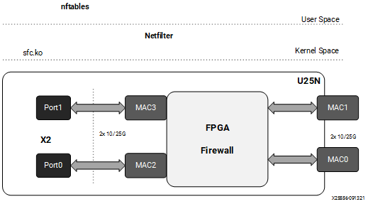

4 Detailed Applications Description¶
4.1 Legacy and Switchdev Modes¶
4.1.1 Legacy NIC (Default)¶
In legacy mode packets from the external MAC0 are forwarded to the internal MAC2 without any modifications on flow entry miss, and vice versa. Similarly, packets from the external MAC1 are forwarded to the internal MAC3 without any modifications on flow entry miss, and vice versa. OVS is not supported in this configuration.
Figure 5: Legacy Mode

4.1.2 Switchdev Mode¶
When changed to the switchdev mode, the U25N can support OVS switching. Devlink features are added to the PF0 interface in each adapter to support the switch mode. Switchdev mode can be added for a single adapter or both. A new representor network interface comes up for each VF when a VM is connected to the VF via SR-IOV virtual ports provided by X2 VNICs.
Figure 6: Switchdev Mode

4.2 OVS¶
4.2.1 Installing OVS¶
OVS is a multilayer software switch licensed under the open source Apache 2 license. It implements a production quality switch platform that supports standard management interfaces and opens the forwarding functions to programmatic extension and control. OVS is well suited to function as a virtual switch in virtualized environments.
Follow the below-mentioned steps to install OVS. For additional infomation of OVS installation, please refer to Installing Open vSwitch
The OVS source code is available in its Git repository
git clone https://github.com/openvswitch/ovs.git
After cloning, the ovs directory will be in the current directory path. “cd” to the ovs directory as mentioned below:
cd ovsExecute the following commands sequentially as the root user:
./boot.sh ./configure make make install
Export the OVS path:
export PATH=$PATH:/usr/local/share/openvswitch/scripts
Perform a version check:
ovs-vswitchd --version
Note: Version 2.17.1 has been tested.
Maximum flows supported and tested: 8k
4.2.2 Classification Fields (Matches)¶
Supported Keys and Actions
Keys:
1. ipv4/ipv6 src_ip
2. ipv4/ipv6 dst_ip
3. ip_tos
4. ip_proto
5. ovlan Outer
6. ivlan Inner
7. ether_type
8. tcp/udp src_port
9. tcp/udp dst_port
10. src_mac
11. dst_mac
12. vni
13. Ingress port
Actions:
1. do_decap
2. do_decr_ip_ttl
3. do_src_mac
4. do_dst_mac
5. do_vlan_pop
6. do_vlan_push
7. do_encap
8. do_deliver
9. mod_vlan_vid
4.2.3 Number of Flow Supported in Datapath Tables¶
AR table - 7680
CT table - 1 Million
MAEO - 1K
MAEX
LACP_LAG_Config_Table - 8
LACP_Balance_Table - 512
Ingress_Mirror_Table - 64
Egress_Mirror_Table - 64
4.2.4 Port to Port¶
In this configuration the U25N PF is added to the OVS bridge as an interface. Packets are sent to an external MAC, and OVS performs the switching based on the packets received.
Figure 7: Port to Port setup

Step 1. Refer to Basic Requirements and Component Versions Supported for the required OS/software version.
Step 2. Check the driver version of U25N interface using the following command:
Note: Ignore this step, if the U25N driver version is latest.
ethtool -i u25eth0 | grep versionNote: To install the latest sfc driver, refer to U25N Driver.
Step 3. Put both U25N PF interfaces in ready state:
List the interfaces
ifconfig -a
Search for U25N interfaces using the
sfbootcommand:sfboot --list # shows the U25N interfacesExample Output:
Adapter list: u25eth0 u25eth1
Bring U25N interfaces up
ifconfig <PF_interface> up
For example:
ifconfig u25eth0 up ifconfig u25eth1 up
Step 4. Put the U25N PF interfaces into switchdev mode:
Note: Ensure that the PF interface link is up before switching to switchdev mode.
The
lspci | grep Solcommand gives us the PCIe® device bus ID required to execute the following command.devlink dev eswitch set pci/0000:<pci_id> mode switchdev # pci_id is the BDF of U25N Device
Example Output:
devlink dev eswitch set pci/0000:af:00.0 mode switchdev devlink dev eswitch set pci/0000:af:00.1 mode switchdev
Setp 5. Stop network manager
systemctl stop NetworkManager
Step 6. Follow the steps mentioned in OVS Configuration to create an OVS bridge. After creating the OVS bridge, continue with the next step.
Step 7. Add external ports to the OVS bridge:
ovs-vsctl add-port <bridge_name> <PF_interface>
For example:
ovs-vsctl add-port br0 u25eth0 ovs-vsctl add-port br0 u25eth1
Step 8. a brief overview of the OVS database contents using the following command:
ovs-vsctl show
Refer to Functionality Check to check the OVS functionality.
4.2.5 Port to VM or VM to Port¶
Note: To have this configuration SR-IOV must be enabled in BIOS. For the Port to VM or VM to Port configuration, a tunnel L2GRE or VXLAN could be created with two server setups.
Figure 8: Port to VM or VM to Port setup

Step 1. Refer to Basic Requirements and Component Versions Supported for the required OS/software version.
For VM use cases, VFs need to be created for the corresponding PF for binding to the VM. The number of VF counts should be configured by the sfboot command with sriov_numvfs.
Note: For more information, refer to sfboot Configuration.
Step 2. Check the driver version of U25N interface using the following command:
Note: Ignore this step, if the U25N driver version is latest.
ethtool -i u25eth0 | grep versionNote: To install the latest sfc driver, refer to U25N Driver.
Step 3. Put both U25N PF interfaces in ready state:
List the interfaces
ifconfig -a
Search for U25N interfaces using the
sfbootcommand:sfboot --list # shows the U25N interfacesExample Output:
Adapter list: u25eth0 u25eth1
Bring U25N interfaces up
ifconfig <PF_interface> up
For example:
ifconfig u25eth0 up ifconfig u25eth1 up
Step 4. Enable desired VFs to the U25N PF. In the following command, a single VF is enabled on the PF0 interface:
Note: The VF could also be created on the PF1 interface based on the use case. The sriov_numvfs count should be less than or equal to the VF count specified in the sfboot command. The sriov_numvfs should be enabled only in legacy mode. To check the U25N mode, excecute the following steps.
devlink dev eswitch show pci/0000:<pci_id> # pci_id is the BDF of U25N DeviceExample Output:
pci/0000:af:00.0 mode legacy
If not in legacy mode, change to legacy mode using the following command:
devlink dev eswitch set pci/0000:<PCIe device bus id> mode legacyEnable desired number of VFs.
echo 1 > /sys/class/net/<PF_interface>/device/sriov_numvfs
For example:
echo 1 > sys/class/net/u25eth0/device/sriov_numvfs
Note: After executing above mentioned command, a VF PCIe ID and VF interface will be created. The VF PCIe device ID can be listed with the command
lspci -d 1924:1b03.An example of the device ID is
af:00.2 Ethernet controller: Solarflare Communications XtremeScale SFC9250 10/25/40/50/100G Ethernet Controller (Virtual Function) (rev 01). This VF PCIe ID is used for binding the VF to a VM.
Step 5. The VF interface can be found using the
ifconfig -acommand. To differentiate VF from PF, use the ip link show command. This gives the VF interface ID and VF interface mac address under the PF interface.Step 6. Ensure that the VF interface is up:
ifconfig <VF_interface> up
Step 7. Ensure that the PF interface is in switchdev mode:
Note: Ensure the PF interface link is up before doing switchdev mode.
The
lspci | grep Solcommand gives the PCIe device bus ID.devlink dev eswitch set pci/0000:<pci_id> mode switchdev # pci_id is the BDF of U25N Device
For example:
devlink dev eswitch set pci/0000:af:00.0 mode switchdevStep 8. Running the above command creates a VF representor interface. The VF representor interface name will be the PF interface name followed by
_0for the first VF representor and_1for the second V representor, and so on.**Note:**The total number of VF representor interfaces created are based on the sriov_numvfs value configured above.
ip link show | grep <PF_interface>For example:
ip link show | grep u25eth0Note: Here u25eth0 is the PF interface and u25eth0_0 is the VF representor interface.
Now make the VF representor interface up using the ifconfig command:
ifconfig <VF_rep_interface> up
Step 9. Follow the steps mentioned in OVS Configuration to create an OVS bridge. After creating the OVS bridge, proceed to the next step.
Step 10. Add PF interfaces as ports to the OVS bridge:
ovs-vsctl add-port <bridge_name> <PF0_interface>
For example:
ovs-vsctl add-port br0 u25eth0
Step 11. Add a VF representor interface as a port to the OVS bridge:
ovs-vsctl add-port <bridge_name> <VF_rep_interface>
For example:
ovs-vsctl add-port br0 u25eth0_0
Step 12. Ensure that the the OVS bridge is up:
ifconfig <bridge_name> up
Step 13. Print a brief overview of the database contents:
ovs-vsctl show
Step 14. Refer VM Installation to instantiate the VM.
Step 15. Refer to Functionality Check to check OVS functionality.
4.2.6 VM to VM¶
Note: To have this configuration SR-IOV must be enabled in BIOS.
Figure 9: VM to VM setup

Step 1. Refer to Basic Requirements and Component Versions Supported for the required OS/software version.
For VM use cases, VFs need to be created for the corresponding PF for binding to the VM. The number of VF counts should be configured by the sfboot command with sriov_numvfs.
Note: For more information, refer to sfboot Configuration.
Step 2. Check the driver version of U25N interface using the following command:
Note: Ignore this step, if the U25N driver version is latest.
ethtool -i u25eth0 | grep versionNote: To install the latest sfc driver, refer to U25N Driver.
Step 3. Put both U25N PF interfaces in ready state:
List the interfaces
ifconfig -a
Search for U25N interfaces using the
sfbootcommand:sfboot --list # shows the U25N interfacesExample Output:
Adapter list: u25eth0 u25eth1
Bring U25N interfaces up
ifconfig <PF_interface> up
For example:
ifconfig u25eth0 up ifconfig u25eth1 up
Step 4. Enable desired VFs to the U25N PF. In the following command, two VFs are enabled on the PF0 interface:
Note: The VF could also be created on the PF1 interface based on the use case. The sriov_numvfs count should be less than or equal to the VF count specified in the sfboot command. The sriov_numvfs should be enabled only in legacy mode. To check the U25N mode, excecute the following steps.
devlink dev eswitch show pci/0000:<pci_id> # pci_id is the BDF of U25N DeviceExample Output:
pci/0000:af:00.0 mode legacy
If not in legacy mode, change to legacy mode using the following command:
devlink dev eswitch set pci/0000:<PCIe device bus id> mode legacyEnable desired number of VFs.
echo 2 > /sys/class/net/<PF_interface>/device/sriov_numvfs
For example:
echo 2 > sys/class/net/u25eth0/device/sriov_numvfs
Note: After executing above mentioned command, a VF PCIe ID and VF interface will be created. The VF PCIe device ID can be listed with the command
lspci -d 1924:1b03.An example of the device ID is
af:00.2 Ethernet controller: Solarflare Communications XtremeScale SFC9250 10/25/40/50/100G Ethernet Controller (Virtual Function) (rev 01). This VF PCIe ID is used for binding the VF to a VM.
Step 5. The VF interface can be found using the
ifconfig -acommand. To differentiate VF from PF, use the ip link show command. This gives the VF interface ID and VF interface mac address under the PF interface.Step 6. Ensure that the VF interface is up:
ifconfig <VF_interface> up
Step 7. Ensure that the PF interfaces are in switchdev mode.
Note: Ensure the PF interface link is up before doing switchdev mode.
The
lspci | grep Solcommand gives the PCIe device bus ID:devlink dev eswitch set pci/0000:<PCIe device bus id> mode switchdevFor example:
devlink dev eswitch set pci/0000:af:00.0 mode switchdevStep 8. Running the above command creates two VF representor interfaces. The VF representor interface name will be the PF interface name followed by
_0for the first VF representor and_1for the second V representor, and so on.**Note:**The total number of VF representor interfaces created are based on the sriov_numvfs value configured above.
ip link show | grep <PF_interface>For example:
ip link show | grep u25eth0u25eth0: <BROADCAST,MULTICAST,UP,LOWER_UP> mtu 1500 qdisc mq state UP mode DEFAULT group default qlen 1000 u25eth0_0: <BROADCAST,MULTICAST,UP,LOWER_UP> mtu 1500 qdisc fq_codel master ovs-system state UP mode DEFAULT group default qlen 1000 u25eth0_1: <BROADCAST,MULTICAST,UP,LOWER_UP> mtu 1500 qdisc fq_codel master ovs-system state UP mode DEFAULT group default qlen 1000
Note: Here u25eth0 is the PF interface, and u25eth0_0 and u25eth0_1 are the VF representor interfaces.
Now make the VF representor interfaces up using the ifconfig command:
ifconfig <VF_rep_interface> up
Step 9. Follow the steps mentioned in OVS Configuration to create an OVS bridge. After creating the OVS bridge, proceed to the next step.
Step 10. Add two VF representor interfaces to the OVS bridge:
ovs-vsctl add-port <bridge_name> <VF_rep_interface 1> ovs-vsctl add-port <bridge_name> <VF_rep_interface 2>
For example:
ovs-vsctl add-port br0 u25eth0_0 ovs-vsctl add-port br0 u25eth0_1
Step 11. Ensure that the the OVS bridge is up:
ifconfig <bridge_name> up
Step 12. Print the brief overview of the database contents:
ovs-vsctl show
Step 14. Refer VM Installation to instantiate the VM.
Step 15. Refer to Functionality Check to check OVS functionality.
4.2.7 Tunnels (Encapsulation/Decapsulation)¶
U25N Smart NIC supports offloading of tunnels using encapsulation and decapsulation actions.
Encapsulation: Pushing tunnel header is supported on TX
Decapsulation: Stripping tunnel header is supported on RX
Supported tunnels:
VXLAN
L2GRE
4.2.7.1 L2GRE¶
Maximum tunnel support = 1K
Maximum supported flows = 8K
Maximum MTU size = 1400
Refer Basic Requirements and Component Versions Supported for the required OS/software version. An L2GRE tunnel can be formed between two servers. Tunnel endpoint IP should be added to the PF interface which acts as a origin of the tunnel.
Figure 10: L2GRE End to End setup with OVS functionality

L2GRE Server 1 Configuration¶
Step 1. Refer to Basic Requirements and Component Versions Supported for the required OS/software version.
Step 2. Check the driver version of U25N interface using the following command:
Note: Ignore this step, if the U25N driver version is latest.
ethtool -i u25eth0 | grep versionNote: To install the latest sfc driver, refer to U25N Driver.
Step 3. Put both U25N PF interfaces in ready state:
List the interfaces
ifconfig -a
Search for U25N interfaces using the
sfbootcommand:sfboot --list # shows the U25N interfacesExample Output:
Adapter list: u25eth0 u25eth1
Bring U25N interfaces up
ifconfig <PF_interface> up
For example:
ifconfig u25eth0 up ifconfig u25eth1 up
Step 4. Assign tunnel local IP to PF0 interface:
ifconfig <PF0_interface> <local_ip> up
For example:
ifconfig u25eth0 10.16.0.2/24 upStep 5. Put the U25N PF0 interface into switchdev mode:
Note: Ensure that the PF interface link is up before switching to switchdev mode.
The
lspci | grep Solcommand gives us the PCIe® device bus ID required to execute the following command.devlink dev eswitch set pci/0000:<pci_id> mode switchdev # pci_id is the BDF of U25N Device
Example Output:
devlink dev eswitch set pci/0000:af:00.0 mode switchdevStep 6. Follow the steps mentioned in OVS Configuration to create an OVS bridge. After creating the OVS bridge, continue with the next step.
Step 7. Create GRE interfaces:
ovs-vsctl add-port <bridge_name> gre0 -- set interface gre0 type=gre options:local_ip=<ip_address> options:remote_ip=<ip_address>
For example:
ovs-vsctl add-port br0 gre0 -- set interface gre0 type=gre options:local_ip=10.16.0.2 options:remote_ip=10.16.0.1
Step 8. Add a PF1 interface as a port to the OVS bridge:
ovs-vsctl add-port <bridge_name> <PF1_interface>
For example:
ovs-vsctl add-port br0 u25eth1
Step 9. Ensue the OVS bridge is up:
ifconfig <bridge_name> up
For example:
ifconfig br0 up
Step 10. Print a brief overview of the database contents:
ovs-vsctl show
L2GRE Server 2 Configuration¶
The setup steps for server 2 is as same as server 1 except for local_ip and remote_ip in step 4 and step 6.
In step 4, the tunnel local IP assigned to PF0 interface should be the tunnel remote IP in above server 1 configuration.
For example:
ifconfig u25eth0 10.16.0.1/24 up
In step 6, the tunnel local IP and remote IP should be swapped in above server 1 configuration.
ovs-vsctl add-port br0 gre0 -- set interface gre0 type=gre
options:local_ip=10.16.0.1 options:remote_ip=10.16.0.2
4.2.7.2 VXLAN¶
Maximum tunnel support = 1K
Maximum supported flows = 8K
Maximum MTU size = 1400
Refer Basic Requirements and Component Versions Supported for the required OS/software version. A VXLAN tunnel can be formed between two servers. Tunnel endpoint IP should be added to the PF interface where the tunnel needs to be created.
Figure 11: VXLAN

VXLAN Server 1 Configuration¶
Step 1. Refer to Basic Requirements and Component Versions Supported for the required OS/software version.
Step 2. Check the driver version of U25N interface using the following command:
Note: Ignore this step, if the U25N driver version is latest.
ethtool -i u25eth0 | grep versionNote: To install the latest sfc driver, refer to U25N Driver.
Step 3. Put both U25N PF interfaces in ready state:
List the interfaces
ifconfig -a
Search for U25N interfaces using the
sfbootcommand:sfboot --list # shows the U25N interfacesExample Output:
Adapter list: u25eth0 u25eth1
Bring U25N interfaces up
ifconfig <PF_interface> up
For example:
ifconfig u25eth0 up ifconfig u25eth1 up
Step 4. Assign tunnel local IP to PF0 interface:
ifconfig <PF0_interface> <local_ip> up
For example:
ifconfig u25eth0 10.16.0.2/24 upStep 5. Put the U25N PF0 interface into switchdev mode:
Note: Ensure that the PF interface link is up before switching to switchdev mode.
The
lspci | grep Solcommand gives us the PCIe® device bus ID required to execute the following command.devlink dev eswitch set pci/0000:<pci_id> mode switchdev # pci_id is the BDF of U25N Device
Example Output:
devlink dev eswitch set pci/0000:af:00.0 mode switchdevStep 5. Follow the steps mentioned in OVS Configuration to create an OVS bridge. After creating the OVS bridge, continue with the next step.
Step 6. Create VXLAN interfaces:
ovs-vsctl add-port br0 vxlan0 -- set interface vxlan0 type=vxlan options:local_ip=<ip_address> options:remote_ip=<ip_address> options:key=<key_id>
For example:
ovs-vsctl add-port br0 vxlan0 -- set interface vxlan0 type=vxlan options:local_ip=10.16.0.2 options:remote_ip=10.16.0.1 options:key=123
Step 7. Add a PF1 interface as a port to the OVS bridge:
ovs-vsctl add-port <bridge_name> <PF1_interface>
For example:
ovs-vsctl add-port br0 u25eth1
Step 8. Ensue the OVS bridge is up:
ifconfig <bridge_name> up
For example:
ifconfig br0 up
Step 9. Print a brief overview of the database contents:
ovs-vsctl show
VXLAN Server 2 Configuration¶
The setup steps for server 2 is as same as server 1 except for local_ip and remote_ip in step 4 and step 6.
In step 4, the tunnel local IP assigned to PF0 interface should be the tunnel remote IP in above server 1 configuration.
For example:
ifconfig u25eth0 10.16.0.1/24 up
In step 6, the tunnel local IP and remote IP should be swapped in above server 1 configuration.
ovs-vsctl add-port br0 vxlan0 -- set interface vxlan0 type=vxlan
options:local_ip=10.16.0.1 options:remote_ip=10.16.0.2 options:key=123
4.2.7.3 VM to VM or VM to Port or Port to VM Tunnel¶
Maximum tunnel support = 1K
Maximum supported flows = 8K
Maximum MTU size = 1400
Refer to Basic Requirements and Component Versions Supported. A VXLAN tunnel can be created between two servers. Tunnel endpoint IP should be added to the PF interface whcih acts as the starting point of the tunnel.
Figure 12: Tunneling/Detunneling setup

Tunnel Server 1 Configuration¶
Step 1. Refer to Basic Requirements and Component Versions Supported for the required OS/software version.
For VM use cases, VFs need to be created for the corresponding PF for binding to the VM. The number of VF counts should be configured by the sfboot command with sriov_numvfs.
Note: For more information, refer to sfboot Configuration.
Step 2. Check the driver version of U25N interface using the following command:
Note: Ignore this step, if the U25N driver version is latest.
ethtool -i u25eth0 | grep versionNote: To install the latest sfc driver, refer to U25N Driver.
Step 3. Put both U25N PF interfaces in ready state:
List the interfaces
ifconfig -a
Search for U25N interfaces using the
sfbootcommand:sfboot --list # shows the U25N interfacesExample Output:
Adapter list: u25eth0 u25eth1
Bring U25N interfaces up
ifconfig <PF_interface> up
For example:
ifconfig u25eth0 up ifconfig u25eth1 up
Step 4. Enable desired VFs to the U25N PF. In the following command, two VFs are enabled on the PF0 interface:
Note: The VF could also be created on the PF1 interface based on the use case. The sriov_numvfs count should be less than or equal to the VF count specified in the sfboot command. The sriov_numvfs should be enabled only in legacy mode. To check the U25N mode, excecute the following steps.
devlink dev eswitch show pci/0000:<pci_id> # pci_id is the BDF of U25N DeviceExample Output:
pci/0000:af:00.0 mode legacy
If not in legacy mode, change to legacy mode using the following command:
devlink dev eswitch set pci/0000:<PCIe device bus id> mode legacyEnable desired number of VFs.
echo 2 > /sys/class/net/<PF_interface>/device/sriov_numvfs
For example:
echo 1 > sys/class/net/u25eth0/device/sriov_numvfs echo 1 > sys/class/net/u25eth1/device/sriov_numvfs
Note: After executing above mentioned command, a VF PCIe ID and VF interface will be created. The VF PCIe device ID can be listed with the command
lspci -d 1924:1b03.An example of the device ID is
af:00.2 Ethernet controller: Solarflare Communications XtremeScale SFC9250 10/25/40/50/100G Ethernet Controller (Virtual Function) (rev 01). This VF PCIe ID is used for binding the VF to a VM.
Step 5. The VF interface can be found using the
ifconfig -acommand. To differentiate VF from PF, use the ip link show command. This gives the VF interface ID and VF interface mac address under the PF interface.Step 6. Ensure that the VF interface is up:
ifconfig <VF_interface> up
Step 7. Ensure that the PF interfaces are in switchdev mode.
Note: Ensure the PF interface link is up before doing switchdev mode.
The
lspci | grep Solcommand gives the PCIe device bus ID:devlink dev eswitch set pci/0000:<PCIe device bus id> mode switchdevFor example:
devlink dev eswitch set pci/0000:af:00.0 mode switchdev devlink dev eswitch set pci/0000:af:00.1 mode switchdev
Step 8. Running the above command creates two VF representor interfaces. The VF representor interface name will be the PF interface name followed by
_0for the first VF representor and_1for the second V representor, and so on.**Note:**The total number of VF representor interfaces created are based on the sriov_numvfs value configured above.
ip link show | grep <PF_interface>For example:
ip link show | grep u25ethu25eth0: <BROADCAST,MULTICAST,UP,LOWER_UP> mtu 1500 qdisc mq state UP mode DEFAULT group default qlen 1000 u25eth0_0: <BROADCAST,MULTICAST,UP,LOWER_UP> mtu 1500 qdisc fq_codel master ovs-system state UP mode DEFAULT group default qlen 1000 ip link show | grep <u25eth1> u25eth1: <BROADCAST,MULTICAST,UP,LOWER_UP> mtu 1500 qdisc mq state UP mode DEFAULT group default qlen 1000 u25eth1_0: <BROADCAST,MULTICAST,UP,LOWER_UP> mtu 1500 qdisc fq_codel master ovs-system state UP mode DEFAULT group default qlen 1000
Note: Here u25eth0 and u25eth1 is the PF interface, and u25eth0_0 and u25eth1_0 are the VF representor interfaces.
Now make the VF representor interfaces up using the ifconfig command:
ifconfig <VF_rep_interface> up
Step 9. Follow the steps mentioned in OVS Configuration to create an OVS bridge. After creating the OVS bridge, proceed to the next step.
Step 10. Creating VXLAN/GRE interfaces:
Note: The following configuration is for the VXLAN. Similarly, the GRE tunnel could also be used.
ovs-vsctl add-port br0 vxlan0 -- set interface vxlan0 type=vxlan options:local_ip=<ip_address> options:remote_ip=<ip_address> options:key=<key_id> ovs-vsctl add-port br1 vxlan1 -- set interface vxlan0 type=vxlan options:local_ip=<ip_address> options:remote_ip=<ip_address> options:key=<key_id>
For example:
ovs-vsctl add-port br0 vxlan0 -- set interface vxlan0 type=vxlan options:local_ip=10.16.0.2 options:remote_ip=10.16.0.1 options:key=123 ovs-vsctl add-port br1 vxlan1 -- set interface vxlan type=vxlan options:local_ip=10.16.0.3 options:remote_ip=10.16.0.4 options:key=456
Step 11. Add VF representor enabled on each PF interface to a separate OVS bridge.
ovs-vsctl add-port <bridge_name_0> <VF_rep_interface 1> ovs-vsctl add-port <bridge_name_1> <VF_rep_interface 2>
For example:
ovs-vsctl add-port br0 u25eth0_0 ovs-vsctl add-port br1 u25eth1_0
Step 12. Ensure the the two bridges are up:
ifconfig <bridge_name> up
For example:
ifconfig br0 up ifconfig br1 up
Step 13. Print a brief overview of the database contents:
ovs-vsctl show
Step 14. Refer VM Installation to instantiate the VM.
Tunnel Server 2 Configuration¶
The setup steps for server 2 is as same as server 1 except for local_ip and remote_ip in step 10.
In step 10, the tunnel local IP and remote IP should be swapped in above server 1 configuration.
ovs-vsctl add-port br0 vxlan0 -- set interface vxlan0 type=vxlan options:local_ip=10.16.0.1 options:remote_ip=10.16.0.2 options:key=123
ovs-vsctl add-port br1 vxlan1 -- set interface vxlan type=vxlan options:local_ip=10.16.0.4 options:remote_ip=10.16.0.3 options:key=456
4.2.8 LACP¶
4.2.8.1 LAG Creation¶
Step 1. Refer to Basic Requirements and Component Versions Supported for the required OS/software version.
Step 2. Check the driver version of U25N interface using the following command:
Note: Ignore this step, if the U25N driver version is latest.
ethtool -i u25eth0 | grep versionNote: To install the latest sfc driver, refer to U25N Driver.
Step 3. Put both U25N PF interfaces in ready state:
List the interfaces
ifconfig -a
Search for U25N interfaces using the
sfbootcommand:sfboot --list # shows the U25N interfacesExample Output:
Adapter list: u25eth0 u25eth1
Bring U25N interfaces up
ifconfig <PF_interface> up
For example:
ifconfig u25eth0 up ifconfig u25eth1 up
Step 4. Put the U25N PF interfaces into switchdev mode:
Note: Ensure that the PF interface link is up before switching to switchdev mode.
The
lspci | grep Solcommand gives us the PCIe® device bus ID required to execute the following command.devlink dev eswitch set pci/0000:<pci_id> mode switchdev # pci_id is the BDF of U25N Device
Example Output:
devlink dev eswitch set pci/0000:af:00.0 mode switchdev devlink dev eswitch set pci/0000:af:00.1 mode switchdev
Step 5. Enable desired VFs to the U25N PF. In the following command, two VFs are enabled on the PF0 interface:
Note: The VF could also be created on the PF1 interface based on the use case. The sriov_numvfs count should be less than or equal to the VF count specified in the sfboot command. The sriov_numvfs should be enabled only in legacy mode. To check the U25N mode, excecute the following steps.
devlink dev eswitch show pci/0000:<pci_id> # pci_id is the BDF of U25N DeviceExample Output:
pci/0000:af:00.0 mode legacy
If not in legacy mode, change to legacy mode using the following command:
devlink dev eswitch set pci/0000:<PCIe device bus id> mode legacyEnable desired number of VFs.
echo 1 > /sys/class/net/<PF_interface>/device/sriov_numvfs
For example:
echo 1 > sys/class/net/u25eth0/device/sriov_numvfs echo 1 > sys/class/net/u25eth1/device/sriov_numvfs
Note: After executing above mentioned command, a VF PCIe ID and VF interface will be created. The VF PCIe device ID can be listed with the command
lspci -d 1924:1b03.An example of the device ID is
af:00.2 Ethernet controller: Solarflare Communications XtremeScale SFC9250 10/25/40/50/100G Ethernet Controller (Virtual Function) (rev 01). This VF PCIe ID is used for binding the VF to a VM.
Step 6. The VF interface can be found using the
ifconfig -acommand. To differentiate VF from PF, use the ip link show command. This gives the VF interface ID and VF interface mac address under the PF interface.Step 7. Ensure that the VF interface is up:
ifconfig <VF_interface> up
Step 8. Ensure that the PF interfaces are in switchdev mode.
Note: Ensure the PF interface link is up before doing switchdev mode.
The
lspci | grep Solcommand gives the PCIe device bus ID:devlink dev eswitch set pci/0000:<PCIe device bus id> mode switchdevFor example:
devlink dev eswitch set pci/0000:af:00.0 mode switchdev devlink dev eswitch set pci/0000:af:00.1 mode switchdev
Step 9. Running the above command creates two VF representor interfaces. The VF representor interface name will be the PF interface name followed by
_0for the first VF representor and_1for the second V representor, and so on.**Note:**The total number of VF representor interfaces created are based on the sriov_numvfs value configured above.
ip link show | grep <PF_interface>For example:
ip link show | grep u25ethu25eth0: <BROADCAST,MULTICAST,UP,LOWER_UP> mtu 1500 qdisc mq state UP mode DEFAULT group default qlen 1000 u25eth0_0: <BROADCAST,MULTICAST,UP,LOWER_UP> mtu 1500 qdisc fq_codel master ovs-system state UP mode DEFAULT group default qlen 1000 ip link show | grep <u25eth1> u25eth1: <BROADCAST,MULTICAST,UP,LOWER_UP> mtu 1500 qdisc mq state UP mode DEFAULT group default qlen 1000 u25eth1_0: <BROADCAST,MULTICAST,UP,LOWER_UP> mtu 1500 qdisc fq_codel master ovs-system state UP mode DEFAULT group default qlen 1000
Note: Here u25eth0 and u25eth1 is the PF interface, and u25eth0_0 and u25eth1_0 are the VF representor interfaces.
Now make the VF representor interfaces up using the ifconfig command:
ifconfig <VF_rep_interface> up
Step 10: Creating PF bond.
Install the bonding driver
modprobe bonding
Create a PF bond interface. Then set bond mode as 802.3ad and xmit hash policy as layer 3+4
ip link add bond0 type mode 802.3ad xmit_hash_policy layer3+4
Make both PF interfaces down
ifconfig <PF_interface> down
Example Output:
ifconfig u25eth0 down ifconfig u25eth1 down
Adding PF slave interfaces to master bond interface
echo "+u25eth0" > /sys/class/net/bond0/bonding/slaves echo "+u25eth1" > /sys/class/net/bond0/bonding/slaves
Make the bond interface up
ifconfig bond0 up
Now the bond interface should show the supported rate as 50Gbps
ethtool bond0
Master bond and its corresponding slave interfaces would have the same MAC address
Step 11: Creating a VF bond
Create a VF bond interface. Then set bond mode as balance-xor mode and xmit hash policy as layer 3+4
ip link add vfbond0 type mode balance-xor xmit_hash_policy layer3+4Make both VF interfaces down
ifconfig <vf_interface> down
Adding VF slave interfaces to master VF bond interface
echo "+u25eth0n0" > /sys/class/net/vfbond0/bonding/slaves echo "+u25eth1n0" > /sys/class/net/vfbond0/bonding/slaves
Make the VF bond interface up
ifconfig vfbond0 up
Now the bond interface should show the supported rate as 50Gbps
ethtool vfbond0
Master vfbond and its corresponding slave interfaces would have the same MAC address
Step 12: Creating VF_Rep bond
Create a VF_Rep bond interface. Then set bond mode as balance-rr mode
ip link add repbond0 type mode balance-rrMake both VF_rep interfaces down
ifconfig <VF_rep_interface> down
Adding VF_Rep slave interfaces to master VF_Rep bond interface
echo "+u25eth0_0" > /sys/class/net/repbond0/bonding/slaves echo "+u25eth1_0" > /sys/class/net/repbond0/bonding/slaves
Make the VF_Rep bond interface up
ifconfig repbond0 up
Now the VF_Rep bond interface should show the supported rate as 50Gbps
ethtool repbond0
Master VF_Rep bond and its corresponding slave interfaces would have the same MAC address
Step 13: Follow the steps mentioned in OVS Configuration to create an OVS bridge. After creating the OVS bridge, proceed to the next step.
Step 14: Adding VF bond and VR_rep bond to OVS bridges.
ovs-vsctl add-port br0 bond0 ovs-vsctl add-port br0 repbond0
Step 15: Ensure that the bridge is up:
ifconfig <bridge_name> up
For example:
ifconfig br0 up
Step 16: Print a brief overview of the database contents:
ovs-vsctl show
Step 17: Refer VM Installation to instantiate the VM with macvtap.
Step 18: Post successful instantiation refer Functionality Check to validate functionality.
4.2.8.2 LAG Deletion¶
Step 1: Delete ovs-bridge
ovs-vsctl del-br <bridge_name>
Step 2: Delete VF_Rep bond interface
echo "-repbond_interface" > /sys/class/net/bonding_masters
Step 3: Delete VF bond interface
echo "-vfbond_interface" > /sys/class/net/bonding_masters
Step 4: Delete PF bond interface
echo "-bond_interface" > /sys/class/net/bonding_masters
Example output:
echo "-bond0" > /sys/class/net/bonding_masters
Step 5: After deleting bond interfaces, remove driver module
rmmod sfc
4.2.9 Connection Tracking¶
Note: Refer to OVS Conntrack Tutorial for detail of OVS connection tracking feature.
Before using connection tracking feature, please install below kernel modules.
modprobe sch_netem
modprobe nf_flow_table
modprobe nf_conntrack
modprobe nft_flow_offload
Below scenario uses Port to VM or VM to Port data path as an example. Conntrack feature works in Port to Port and VM to VM scenarios too.
Before below steps, please follow the step 1 to 14 in Port to VM or VM to Port to setup OVS and create PF and VF for the bridge.
Configuring TCP flow table timeout
echo 3600 > /proc/sys/net/netfilter/nf_flowtable_tcp_timeout
Maximum number of conntrack connections
echo 524288 > /proc/sys/net/netfilter/nf_conntrack_max
Then following below steps to configure connection tracking rules to the OVS bridges.
Step 1. Clean all existing Openflow rules of the bridges if they have.
ovs-ofctl del-flows <br0> ovs-ofctl del-flows <br1>
Step 2. Add Openflow rules for testing PF0 and PF1:
# Table 0 ovs-ofctl add-flow br0 "table=0, priority=1, arp, actions=normal" ovs-ofctl add-flow br0 "table=0, priority=3, icmp, actions=normal" ovs-ofctl add-flow br0 "table=0, priority=2, icmp6, actions=normal" ovs-ofctl add-flow br0 "table=0, priority=1, ip, actions=resubmit(,1)" ovs-ofctl add-flow br0 "table=0, priority=1, ipv6, actions=resubmit(,1)" ovs-ofctl add-flow br0 "table=0, priority=0, actions=drop" # Table 1 ovs-ofctl add-flow br0 "table=1, priority=1, ct_state=-trk, ip, actions=ct(table=1,zone=0x1)" ovs-ofctl add-flow br0 "table=1, priority=1, ct_state=-trk, ipv6, actions=ct(table=1)" ovs-ofctl add-flow br0 "table=1, priority=1, ct_state=+trk+new, ip, in_port=<PF_interface>, actions=ct(commit,zone=0x1),output:\"<VF_interface>\"" ovs-ofctl add-flow br0 "table=1, priority=1, ct_state=+trk+new, ip, in_port=<VF_interface>, actions=ct(commit,zone=0x1),output:\"<PF_interface>\"" ovs-ofctl add-flow br0 "table=1, priority=1, ct_state=+trk+new, ipv6, actions=ct(commit),normal" ovs-ofctl add-flow br0 "table=1, priority=1, ct_state=+trk+est, ip, in_port=<PF_interface>, actions=output:\"<VF_interface>\"" ovs-ofctl add-flow br0 "table=1, priority=1, ct_state=+trk+est, ip, in_port=<VF_interface>, actions=output:\"<PF_interface>\"" ovs-ofctl add-flow br0 "table=1, priority=1, ct_state=+trk+est, ipv6, actions=normal" ovs-ofctl add-flow br0 "table=1, priority=0, actions=drop"
4.2.10 OVS Configuration¶
Step 1. Export the OVS path:
export PATH=$PATH:/usr/local/share/openvswitch/scripts export PATH=$PATH:/usr/local/bin
Step 2. Stop OVS and remove any database to get rid of old configurations:
ovs-ctl stop rm /usr/local/etc/openvswitch/conf.db
Step 3. Start OVS:
ovs-ctl start
Step 4. Enable hardware offload:
ovs-vsctl set Open_vSwitch . other_config:hw-offload=true ovs-vsctl set Open_vSwitch . other_config:tc-policy=none
Step 5. Set OVS log levels (for debug purpose only, if needed):
ovs-appctl vlog/set ANY:ANY:dbg ovs-appctl vlog/set poll_loop:ANY:OFF ovs-appctl vlog/set netlink_socket:ANY:OFF
Step 6. Set the maximum time (in ms) that idle flows remain cached in the datapath:
# Maximum time (in ms) that idle flows will remain cached in the datapath ovs-vsctl set open_vswitch $(ovs-vsctl list open_vswitch | grep _uuid | cut -f2 -d ":" | tr -d ' ') other_config:max-idle=6000000 # Maximum time (in ms) that revalidator threads will wait for kernel statistics before executing flow revalidation ovs-vsctl set open_vswitch . other_config:max-revalidator=10000 # Number of threads for software datapaths to use for handling new flows. The default value is the number of online CPU cores minus the number of revalidators. ovs-vsctl set Open_vSwitch . other_config:n-handler-threads=8 # Specifies the number of threads for software datapaths to use for revalidating flows in the datapath. ovs-vsctl set Open_vSwitch . other_config:n-revalidator-threads=4
Step 7. After adding the hardware offload policy, restart OVS:
ovs-ctl restart
Step 8. Print a brief overview of the database contents:
ovs-vsctl show
Step 9. Adding bridge to OVS:
ovs-vsctl add-br <bridge_name>
For Example:
ovs-vsctl add-br br0
Note: For VM to VM or VM to Port or Port to VM Tunnel alone create two OVS bridges. For example:
ovs-vsctl add-br br0andovs-vsctl add-br br1.
4.2.11 Functionality Check¶
After adding the U25N network interfaces to the OVS bridge, the functionality can be verified using ping, iperf, and dpdk network performance tools.
Ping Test¶
Step 1. Assign the IP address to the respective interface and do a ping using the following command:
ping <remote_ip>
Step 2. After a successful ping test, iperf can be used:
Note: For VXLAN and L2GRE, set the MTU size to 1400 before running iperf3 or pktgen on a particular interface.
ifconfig <interface> mtu 1400 [as root]
Step 3. Run
iperf3 -son the host device [iperf server].Step 4. Run
iperf3 -c <ip address>on a remote device [iperf client].
4.2.12 Uninstalling OVS Setup¶
To uninstall the setup, please follow the instructions below.
Step 1. power off all running VMs.
killall qemu-system-x86
Step2. Delete the OVS bridge
ovs-vsctl del-br < Bridge_nam >
Step3. Delete the bond interface if U25N’s interface is the slave interface of this bond interface.
ip link del < bond_name >
Step4. Make all PF interfaces up
ifconfig < interface_name > up
Step5. Change mode from switchdev to legacy
devlink dev switch set pci/0000:<pci> mode legacyStep6. Remove all VFs using the echo command
echo 0 > /sys/class/net/< interface_name >/device/sriov_numvfs
Step7. uninstall the driver module
rmmod sfc
Note: Refer to DPDK on U25N to run dpdk-testpmd.
4.3 IPsec¶
4.3.1 Supported XFRM Parameters¶
IPsec tunnels are created between two servers. Because IPsec is in transport mode, L2GRE is used to create tunnels. The strongSwan application runs in user space. The charon plugin of strongSwan is used to offload rules on the U25N. Packets reaching the IPsec module should be L2GRE encapsulated.
Encryption algorithm: AES-GCM 256 encryption/decryption
IPsec mode: Transport mode.
Maximum IPsec tunnel supported: 32
4.3.2 Classification Fields (Matches)¶
4.3.2.1 Encryption¶
Key
1. IPv4 source address
2. IPv4 destination address
3. IP4 protocol Action
Actions
1. Action flag
2. SPI
3. Key
4. IV
4.3.2.2 Decryption¶
Keys
1. IPv4 source address
2. IPv4 destination address
3. SPI (Security Parameter Index)
Actions
1. Decryption key
2. IV
4.3.3 strongSwan Installation¶
Note: Before installing the Debian package for strongSwan, make sure all the dependencies are installed.
apt-get install aptitude opensc libgmp10 libgmp-dev libssl-dev
Step 1. Refer to Basic Requirements and Component Versions Supported for the required OS/software version.
Step 2. Use the following commands to validate the version of the strongSwan Debian package.
The version can be found using the command
swanctl --version. Remove the already installed package before installing the latest one:dpkg -r strongswan_5.8.4-1_amd64 dpkg -i strongswan_5.8.4-1_amd64.deb
Step 3. After installing the strongSwan package, create a CA certificate. CA certificate can be created in one server and can be copied to the other server.
4.3.3.1 IPSec Server 1 Configuration¶
Step 1. Generating a self-signed CA certificate using the PKI utility of strongSwan:
cd /etc/ipsec.d ipsec pki --gen --type rsa --size 4096 --outform pem > private/strongswanKey.pem ipsec pki --self --ca --lifetime 3650 --in private/strongswanKey.pem --type rsa --dn "C=CH, O=strongSwan, CN=Root CA" --outform pem > cacerts/strongswanCert.pem
Step 2. After the key and certificate are generated in server 1, copy them to server 2 in the same directory.
Copy the file
strongswanKey.pempresent in/etc/ipsec.d/private/from the first server to the second server at the same location.Copy the file
strongswanCert.pempresenti n/etc/ipsec.d/cacerts/strongswanCert.pemfrom the first server to the second server at the same location.
After finishing the above, create a key pair and certificate for each server separately as root.
Step 3. Generate the key pair and certificate in server 1 as a root user:
cd /etc/ipsec.d ipsec pki --gen --type rsa --size 2048 --outform pem > private/client1Key.pem chmod 600 private/client1Key.pem ipsec pki --pub --in private/client1Key.pem --type rsa | ipsec pki --issue --lifetime 730 --cacert cacerts/strongswanCert.pem --cakey private/strongswanKey.pem --dn "C=CH, O=strongSwan, CN=device1" --san device1 --flag serverAuth --flag ikeIntermediate --outform pem > certs/client1Cert.pem
Step 4. Configure the .conf file and secret file in server 1:
In /etc/ipsec.conf, add below text in the beginning of the file
conn hw_offload # left=10.16.0.2 right=10.16.0.1 ike=aes256gcm16-sha256-modp2048 esp=aes256gcm16-modp2048 keyingtries=%forever ikelifetime=8h lifetime=8h dpddelay=1h dpdtimeout=1h dpdaction=restart auto=route keyexchange=ikev2 type=transport leftcert=client1Cert.pem leftsendcert=always hw_offload=yes leftid="C=CH, O=strongSwan, CN=device1" rightid="C=CH, O=strongSwan, CN=device2" leftprotoport=gre rightprotoport=greIn /etc/ipsec.secrets, add below line in the end of the file
: RSA client1Key.pem
Note: There is a white space, present between
:andRSA.
4.3.3.2 IPSec Server 2 Configuration¶
Step 1. Generate the key pair and certificate in server 2 as root:
cd /etc/ipsec.d ipsec pki --gen --type rsa --size 2048 --outform pem > private/client2Key.pem chmod 600 private/client2Key.pem ipsec pki --pub --in private/client2Key.pem --type rsa | ipsec pki --issue --lifetime 730 --cacert cacerts/strongswanCert.pem --cakey private/strongswanKey.pem --dn "C=CH, O=strongSwan, CN=device2" --san device2 --flag serverAuth --flag ikeIntermediate --outform pem > certs/client2Cert.pem
Step 2. Configure the conf file and secret file in server 2:
In /etc/ipsec.conf, add below text in the beginning of the file
conn hw_offload # left=10.16.0.1 right=10.16.0.2 ike=aes256gcm16-sha256-modp2048 esp=aes256gcm16-modp2048 keyingtries=%forever ikelifetime=8h lifetime=8h dpddelay=1h dpdtimeout=1h dpdaction=restart auto=route keyexchange=ikev2 type=transport leftcert=client2Cert.pem leftsendcert=always hw_offload=yes leftid="C=CH, O=strongSwan, CN=device2" rightid="C=CH, O=strongSwan, CN=device1" leftprotoport=gre rightprotoport=greIn /etc/ipsec.secrets, add below line in the end of the file
: RSA client1Key.pem
Note: There is a white space, present between
:andRSA.
4.3.3.3 Server 1: Steps to Run IPsec¶
Follow the step 1 to 10 of L2GRE Server 1 Configuration to setup L2GRE on server 1.
Then enable IPSec as below.
Step 1. Enable IPSec offload in the driver:
echo 1 >> /sys/class/net/<PF0_interface>/device/ipsec_enable
For example:
echo 1 >> /sys/class/net/u25eth0/device/ipsec_enable
Step 2. Start IPsec:
ipsec restart
4.3.3.4 Server 2: Steps to Run IPsec¶
Follow the step 1 to 10 of L2GRE Server 2 Configuration to setup L2GRE on server 1.
Then enable IPSec as below.
Step 1. Enable IPSec offload in the driver:
echo 1 >> /sys/class/net/<PF0_interface>/device/ipsec_enable
For example:
echo 1 >> /sys/class/net/u25eth0/device/ipsec_enable
Step 2. Start IPsec:
ipsec restart
Figure 13: IPsec + OVS End to End setup Diagram

4.4 Stateless Firewall¶
This section is about stateless firewall prerequisites, installation steps, and supported rules.
Kernel Upgrade¶
Run the command uname -r to get the kernel version. If the kernel version is v5.5 or higher, skip the following steps:
Step 1. Install kernel > 5.5 for nftables offload support
apt install linux-image-<version>-generic linux-headers-<version>-generic linux-modules-extra-<version>-generic
Step 2. After the command is executed with no error, do a reboot:
reboot
nftables¶
Note: Refer Deployment Image Flashing for flashing images to check firewall functionality.
Step 1. Refer to Basic Requirements and Component Versions Supported for the required OS/software version.
Step 2. Check the nftables version. U25N supports nftables version ≥ v0.9.6. The nftables version can be found using the command
nft -v.Note: Tested version 0.9.6 and 0.9.8.
Step 3. The nftables only work in legacy mode. Ensure the U25N is in legacy mode using the following command:
devlink dev eswitch show pci/0000:<pci_id>
The output of the above command should be:
pci/0000:<pci_id>: mode legacy
In case not in legacy mode, change it to legacy mode using the following command:
devlink dev eswitch set pci/0000:<pci_id> mode legacy
4.4.3 Classification Fields (Matches)¶
Maximum rules supported: 1K for each U25N PF interface.
Keys:
1. IPv4/IPv6 source address
2. IPv4/IPv6 destination address
3. Protocol (TCP/UDP)
4. Src_port
5. Dst_port
6. Chain
7. Interface Action
Actions
1. drop
2. accept
Figure 14: Firewall

Driver Installation¶
Note: Log in as a root user before proceeding with the following steps.
The prerequisites for the driver installation are as follows:
modprobe mtd (first time only)
modprobe mdio (first time only)
Step 1. Check the driver version of U25N interface using the following command:
Note: Ignore this step, if the U25N driver version is latest.
ethtool -i u25eth0 | grep versionNote: To install the latest sfc driver, refer to U25N Driver.
Step 2. Creating a table
nft add table <family> <name>
For example:
nft add table netdev filter.Step 3. Creating a chain:
For example:
nft add chain netdev filter input1 { type filter hook ingress device ens7f1np1 priority 1; flags offload ;}
Adding a chain without specifying the policy leads to the default policy Accept.
Step 4. Adding rules to the chain:
nft add rule <family> <table name> <chain name> ip saddr <ip> drop
For example:
nft add rule netdev filter input1 ip saddr 1.1.1.1 dropStep 5. Commands for listing tables, chain, and rules:
Listing a table of a netdev family:
nft list tables <family>
For example:
nft list tables netdev
Listing a particular chain from a table:
nft list chain <family> <table name> <chain_name>
For example:
nft list chain netdev filter input1
Listing a chain along with a handle:
nft -a list chain <family> <table name> <chain_name>
For example:
nft -a list chain netdev filter input1
Listing all tables, chains, and rules with handle:
nft -a list ruleset
Step 6. Commands for deleting tables, chains and rules:
Deleting a table:
nft delete table <family> <name>
For example:
nft delete table netdev filter
Deleting a chain:
nft delete chain <family> <table name> <chain name>
For example:
nft delete chain netdev filter input1
Deleting a specific rule with a handle:
nft delete rule <family> <table name> <chain_name> handle <handle_no>
For example:
nft delete rule netdev filter input1 handle 3Note: Here the handle number for a specific rule could be found using the
nft -a list rulesetcommand.
4.5 Rate Limiting¶
Rate limiting can be applied on U25N’s virtual function in ingress and egress directions.
4.5.1 Ingress rule:¶
4.5.1.1 Add Rate Limit Policy:¶
tc filter add dev <VF_rep_interface> parent ffff: protocol all prio 90 matchall action police rate <value>mbit burst 10000 mtu 64Kb
Eg: Ingress rate limit of 4 Gbps at u25eth0_0
tc filter add dev u25eth0_0 parent ffff: protocol all prio 90 matchall action police rate 4000mbit burst 10000 mtu 64Kb
4.5.1.2 Delete Rate Limit Policy¶
tc filter del dev <VF_rep_interface> parent ffff: protocol all prio 90 matchall action police rate <value>mbit burst 10000 mtu 64Kb
Eg:
tc filter del dev u25eth0_0 parent ffff: protocol all prio 90 matchall action police rate 4000mbit burst 10000 mtu 64Kb
4.5.2 Egress rule:¶
4.5.2.1 Add Rate Limit Policy:¶
tc qdisc add dev <VF_rep_interface> handle 1: root prio
tc filter add dev <VF_rep_interface> parent 1: protocol all prio 100 matchall action police rate <value>mbit burst 10000 mtu 64kb
Eg: Egress rate limit of 2 Gbps at u25eth0_0
tc qdisc add dev u25eth0_0 handle 1: root prio
tc filter add dev u25eth0_0 parent 1: protocol all prio 100 matchall action police rate 2000mbit burst 10000 mtu 64kb
4.5.2.2 Delete Rate Limit Policy¶
tc filter del dev <VF_rep_interface> parent 1: protocol all prio 100 matchall action police rate <value>mbit burst 10000 mtu 64kb
tc qdisc del dev <VF_rep_interface> handle 1: root prio
Eg:
tc qdisc del dev u25eth0_0 handle 1: root prio
tc filter del dev u25eth0_0 parent 1: protocol all prio 100 matchall action police rate 2000mbit burst 10000 mtu 64kb
4.6 Mirroring¶
4.6.1 Sfboot Configuration¶
To enable mirrored traffic to be received by the host CPU (either local or remote) through the U25N X2 Network Controller, insecure filters on PF must be enabled.
sfboot -i <PF_interface> insecure‐filters=enabled
Eg:
sfboot -i u25eth0 insecure‐filters=enabled
sfboot -i u25eth1 insecure‐filters=enabled
Note: Powercycle is required to update the configuration.
To revert back to default insecure filter configuration, use the below command.
sfboot -i <PF_interface> insecure‐filters=default
Eg:
sfboot -i u25eth0 insecure‐filters=default
sfboot -i u25eth1 insecure‐filters=default
Note: Powercycle is required to update the configuration.
4.6.2 Local Mirroring¶
Local mirroring feature mirrors the traffic to VF interface on local server.
4.6.2.1 Add Local Ingress Mirroring Rule:¶
tc filter add dev <VF_rep_interface_0> parent ffff: matchall skip_sw action mirred ingress mirror dev <VF_rep_interface_2>
Note: Here <VF_rep_interface_0> is the interface from which traffic will be mirrored and <VF_rep_interface_2> is the interface to which mirrored traffic will be sent.
Eg:
tc filter add dev u25eth0_0 parent ffff: matchall skip_sw action mirred ingress mirror dev u25eth0_2
4.6.2.2 Delete Local Ingress Mirroring Rule:¶
tc -f filter show dev <VF_rep_interface> parent ffff:
tc filter del dev <VF_rep_interface> parent ffff: handle 1 prio 49152 protocol all matchall
Eg:
tc -f filter show dev u25eth0_0 parent ffff:
tc filter del dev u25eth0_0 parent ffff: handle 1 prio 49152 protocol all matchall
4.6.2.3 Add Local Egress Mirroring Rule:¶
tc qdisc add dev <VF_rep_interface_0> handle 1: root prio
tc filter add dev <VF_rep_interface_0> parent 1: matchall skip_sw action mirred egress mirror dev <VF_rep_interface_2>
Eg:
tc qdisc add dev u25eth0_0 handle 1: root prio
tc filter add dev u25eth0_0 parent 1: matchall skip_sw action mirred egress mirror dev u25eth0_2
4.6.2.4 Delete Local Egress Mirroring Rule:¶
tc filter del dev <VF_rep_interface> parent 1:
tc qdisc del dev <VF_rep_interface> root
Eg:
tc filter del dev u25eth0_0 parent 1:
tc qdisc del dev u25eth0_0 root
4.6.3 Remote Mirroring¶
4.6.3.1 Setup VxLAN tunnel between local and remote servers¶
On local server, create VxLAn tunnel to connect to remote server
ifconfig <VF_interface> 30.30.30.2/24 mtu 9000 up
ip link add vxlan0 type vxlan id 100 remote <TUNNEL_REMOTE_IP> dev <VF_interface> dstport 4789
ifconfig vxlan0 mtu 8950 up
Eg: u25eth0n0 is the VF interface. It connects to remote server through the VxLAN tunnel for mirrored traffic.
ifconfig u25eth0n0 30.30.30.2/24 mtu 9000 up
ip link add vxlan0 type vxlan id 100 remote 10.0.0.3 dev u25eth0n0 dstport 4789
ifconfig vxlan0 mtu 8950 up
4.6.3.2 Add Remote Ingress Mirroring Rule:¶
tc filter add dev <VF_rep_interface> parent ffff: matchall skip_sw action tunnel_key set src_ip <TUNNEL_LOCAL_IP> dst_ip <TUNNEL_REMOTE_IP> dst_port 4789 id 100 pipe action mirred ingress mirror dev vxlan0
Eg:
tc filter add dev u25eth0_0 parent ffff: matchall skip_sw action tunnel_key set src_ip 10.0.0.2 dst_ip 10.0.0.3 dst_port 4789 id 100 pipe action mirred ingress mirror dev vxlan0
4.6.3.3 Delete Remote Ingress Mirroring Rule:¶
tc filter del dev <VF_rep_interface> parent ffff:
Eg:
tc filter del dev u25eth0_0 parent ffff:
4.6.3.4 Add Remote Egress Mirroring Rule:¶
tc qdisc add dev <VF_rep_interface> handle 1: root prio
tc filter add dev <VF_rep_interface> parent 1: matchall skip_sw action tunnel_key set src_ip <TUNNEL_LOCAL_IP> dst_ip <TUNNEL_REMOTE_IP> dst_port 4789 id 100 pipe action mirred egress mirror dev vxlan0
Eg:
tc qdisc add dev u25eth0_0 handle 1: root prio
tc filter add dev u25eth0_0 parent 1: matchall skip_sw action tunnel_key set src_ip 10.0.0.2 dst_ip 10.0.0.3 dst_port 4789 id 100 pipe action mirred egress mirror dev vxlan0
4.6.3.5 Delete Remote Egress Mirroring Rule:¶
tc filter del dev <VF_rep_interface> parent ffff:
tc qdisc del dev <<VF_rep_interface>> root
Eg:
tc filter del dev u25eth0_0 parent ffff:
tc qdisc del dev u25eth0_0 root
4.7 Statistics¶
This section outlines the commands used by different modules to check the statistics and packet counters.
4.7.1 OVS Commands¶
To print a brief overview of the database contents:
ovs-vsctl show
To show the datapath flow entries:
ovs-ofctl dump-flows <bridge_name>
To show the full OpenFlow flow table, including hidden flows, on the bridge:
ovs-appctl dpctl/dump-flows type=offloaded
To show the OVS datapath flows:
ovs-dpctl dump-flows ovs-appctl dpctl/dump-flows
To show which flows are offloaded or not:
tc filter show dev <iface_name> ingress
4.7.2 MAE Rules¶
Use the following command to display the rules present in the match-action engine (MAE):
cat /sys/kernel/debug/sfc/<if_iface>/mae_rules
Note: Here
if_ifaceshould be the corresponding PF interface.For example:
cat /sys/kernel/debug/sfc/if_u25eth0/mae_rules
Use the following command to display the default rules present in the MAE:
cat /sys/kernel/debug/sfc/<iface/mae_default_rules
4.7.3 IPsec Statistics¶
Get IPsec stats:
swanctl --stats
Use the
ip xfrm showcommand to display IPsec offload security association.
4.8 Debug Commands¶
Note: The output of the following commands should be saved for debug purposes.
lsmod- It displays which kernel modules are currently loaded. Whether the sfc driver is inserted or not can be verified by the below command.lsmod | grep sfcExpected result:
sfc 704512 0 sfc_driverlink 16384 1 sfc virtual_bus 20480 1 sfc mtd 65536 14 cmdlinepart,sfc mdio 16384 1 sfc
dmesg- To get kernel logs, enter the following command. This command will help to understand all the actions performed by the driver and if there are any crashes happening due to the driver.lspci- To display information about all PCI buses and devices in the system. It will also show the network cards inserted in the system with details like driver in use, pci id etc. For Example:lspci | grep Solarflare #Lists the info regarding solarflare devices in the system lspci -k | grep Solarflare #Lists the subsystem information also. lspci -vvv -s <BDF>
Expected result:
lspci | grep Solarflare: 3b:00.0 Ethernet controller: Solarflare Communications XtremeScale SFC9250 10/25/40/50/100G Ethernet Controller (rev 01) 3b:00.1 Ethernet controller: Solarflare Communications XtremeScale SFC9250 10/25/40/50/100G Ethernet Controller (rev 01) lspci -k | grep Solarflare: 3b:00.0 Ethernet controller: Solarflare Communications XtremeScale SFC9250 10/25/40/50/100G Ethernet Controller (rev 01) Subsystem: Solarflare Communications XtremeScale SFC9250 10/25/40/50/100G Ethernet Controller 3b:00.1 Ethernet controller: Solarflare Communications XtremeScale SFC9250 10/25/40/50/100G Ethernet Controller (rev 01) Subsystem: Solarflare Communications XtremeScale SFC9250 10/25/40/50/100G Ethernet Controller
Logs generated by U25N hardware are saved to a file.The logs are collected from the internal processing subsystem and exported to the host at frequent intervals. Currently these logs are populated when switchdev mode is enabled.
Path to read the logs in host :
/var/log/ps_dmesg.txtsfreport- A command line utility that generates a diagnostic log file providing diagnostic data about the server and Solarflare adapters. Please refer to SF-103837-CD Solarflare Server Adapter User Guide chapter 5.20 for more details.top- This command can be used to show the linux processes or threads. It provides a real time view of the running system. It can be used to detect memory leaks. The file in the linux path /proc/meminfo can also be used for detecting memory leaks.Watch out for the total memory already in use. Memory leak can be identified by running the command multiple times and checking whether the memory usage keeps on increasing.
ps- This command displays relevant information about active processes.Example:
ps -aux | grep sfcethtool- This command can be used to understand the driver related information such as version, firmware info and the enabled features.ethtool -i <interface_name>
Example Usage: ethtool -i u25eth0
Expected result: driver: sfc version: 5.3.3.2000.1 firmware-version: 7.8.7.1005 rx0 tx0 expansion-rom-version: bus-info: 0000:3b:00.0 supports-statistics: yes supports-test: yes supports-eeprom-access: no supports-register-dump: yes supports-priv-flags: yes
To get the information of the state of protocol offload and other features
ethtool -k <interface_name>
Example Usage: ethtool -k u25eth0
Expected result: Features for enp59s0f1np1: rx-checksumming: on tx-checksumming: on tx-checksum-ipv4: on tx-checksum-ip-generic: off [fixed] tx-checksum-ipv6: on tx-checksum-fcoe-crc: off [fixed] tx-checksum-sctp: off [fixed] scatter-gather: on tx-scatter-gather: on tx-scatter-gather-fraglist: off [fixed] tcp-segmentation-offload: on tx-tcp-segmentation: on tx-tcp-ecn-segmentation: on tx-tcp-mangleid-segmentation: off tx-tcp6-segmentation: on generic-segmentation-offload: on generic-receive-offload: on large-receive-offload: off
To change the offload parameters and other features of the network device
ethtool -K <interface_name> <feature> <on/off>
To get information about NIC Statistics
ethtool -S <interface_name>
Example usage: ethtool -S enp59s0f1np1
```bash Expected result: NIC statistics: rx_noskb_drops: 0 rx_nodesc_trunc: 0 port_tx_bytes: 59052 port_tx_packets: 353 port_tx_pause: 0 port_tx_control: 0 port_tx_unicast: 0 port_tx_multicast: 273 port_tx_broadcast: 80 port_tx_lt64: 0 port_tx_64: 0 port_tx_65_to_127: 229 port_tx_128_to_255: 44 port_tx_256_to_511: 80 port_tx_512_to_1023: 0 port_tx_1024_to_15xx: 0 port_tx_15xx_to_jumbo: 0 port_rx_bytes: 0 port_rx_good_bytes: 0 port_rx_bad_bytes: 0 port_rx_packets: 0 ```
NOTE: ethtool functionalities for sfc driver can also be realised using the sfctool utility also. For example:
sfctool -S <interface_name>
Example Usage:
sfctool -S u25eth0
u25n_updateApplication: u25n_update utility can be used to read the U25N shell version. For example:./utils/u25n_update get-version <PF0_interface>
MCDI Logging - Mcdi request and response data will be visible in dmesg if we activate mcdi logs. To activate the logs in dmesg.
echo 1 >> /sys/class/net/<interface_name>/device/mcdi_logging
OVS log levels - It can be turned on/off using the ovs-appctl commands.
The ovs-vswitchd accepts the option –log-file[=file] to enable logging to a specific file. The file argument is actually optional, so if it is specified, it is used as the exact name for the log file. The default is used if the file is not specified. Usually the default is /usr/local/var/log/openvswitch/ovs-vswitchd.log
Setting OVS Log levels:
ovs-appctl vlog/set ANY:ANY:dbg ovs-appctl vlog/set poll_loop:ANY:OFF ovs-appctl vlog/set netlink_socket:ANY:OFF
MAE Rules - To see the offloaded rules available in the MAE, check the below file:
cat /sys/kernel/debug/sfc/if_<interface_name>/mae_rules
To check the default rules in MAE, check the below file:
cat /sys/kernel/debug/sfc/if_<interface_name>/mae_default_rules
iperf3- Iperf is a tool for network performance measurement and tuning. It is a cross-platform tool that can produce standardized performance measurements for any network. It has client and server functionality, and can create data streams to measure the throughput between the interfaces. After setting proper ip addresses:Server:
iperf3 -s <options>
Client :
iperf -c <ip_addr_interface> <options>
tcpdump- Tcpdump is a packet sniffing and packet analyzing tool meant for System Administrators to troubleshoot connectivity issues in Linux. For example it can capture the packets coming to the network interface using the below command.tcpdump -i <interface_name>
conntrack- get connection status and track connection processGet connection status
conntrack -L
Track connection process
conntrack -E
Check U25N offloaded connection
cat /sys/kernel/debug/sfc/if_<PF_interface>/tracked_conns | grep 0xfff | wc -l